Objectives
Authenticate users against the Firebase Authentication service
Exercise
Rework the PlacemarkModel so that, instead repeating lat/lng/zoom in each placemark, we embed a Location object. In order to implement this in the context of the Room system, you will need to use the @Embedded annotation:
Also, you will also have to adjust the other Store implementations.
Solution
Revised PlacemarkModel:
PlacemarkModel
package org.wit.placemark.models
import android.os.Parcelable
import androidx.room.Embedded
import androidx.room.Entity
import androidx.room.PrimaryKey
import kotlinx.android.parcel.Parcelize
@Parcelize
@Entity
data class PlacemarkModel(@PrimaryKey(autoGenerate = true) var id: Long = 0,
var title: String = "",
var description: String = "",
var image: String = "",
@Embedded var location : Location = Location()): Parcelable
@Parcelize
data class Location(var lat: Double = 0.0,
var lng: Double = 0.0,
var zoom: Float = 0f) : ParcelableRevised update methods in some existing PlacemarmStore implementations:
PlacemarkMemStore
suspend override fun update(placemark: PlacemarkModel) {
var foundPlacemark: PlacemarkModel? = placemarks.find { p -> p.id == placemark.id }
if (foundPlacemark != null) {
foundPlacemark.title = placemark.title
foundPlacemark.description = placemark.description
foundPlacemark.image = placemark.image
foundPlacemark.location = placemark.location
logAll();
}
}PlacemarkJSONStore
suspend override fun update(placemark: PlacemarkModel) {
val placemarksList = findAll() as ArrayList<PlacemarkModel>
var foundPlacemark: PlacemarkModel? = placemarksList.find { p -> p.id == placemark.id }
if (foundPlacemark != null) {
foundPlacemark.title = placemark.title
foundPlacemark.description = placemark.description
foundPlacemark.image = placemark.image
foundPlacemark.location = placemark.location
}
serialize()
}One View will need revision:
PlacemarkView
...
lat.setText("%.6f".format(placemark.location.lat))
lng.setText("%.6f".format(placemark.location.lng))
...We can rework the PlacemarkPresenter to be marginally simplified:
PlacemarkPresenter
package org.wit.placemark.views.placemark
import android.annotation.SuppressLint
import android.content.Intent
import com.google.android.gms.location.FusedLocationProviderClient
import com.google.android.gms.location.LocationCallback
import com.google.android.gms.location.LocationResult
import com.google.android.gms.location.LocationServices
import com.google.android.gms.maps.CameraUpdateFactory
import com.google.android.gms.maps.GoogleMap
import com.google.android.gms.maps.model.LatLng
import com.google.android.gms.maps.model.MarkerOptions
import kotlinx.coroutines.experimental.android.UI
import kotlinx.coroutines.experimental.async
import org.wit.placemark.helpers.checkLocationPermissions
import org.wit.placemark.helpers.createDefaultLocationRequest
import org.wit.placemark.helpers.isPermissionGranted
import org.wit.placemark.helpers.showImagePicker
import org.wit.placemark.models.Location
import org.wit.placemark.models.PlacemarkModel
import org.wit.placemark.views.*
class PlacemarkPresenter(view: BaseView) : BasePresenter(view) {
var map: GoogleMap? = null
var placemark = PlacemarkModel()
var defaultLocation = Location(52.245696, -7.139102, 15f)
var edit = false;
var locationService: FusedLocationProviderClient = LocationServices.getFusedLocationProviderClient(view)
val locationRequest = createDefaultLocationRequest()
init {
if (view.intent.hasExtra("placemark_edit")) {
edit = true
placemark = view.intent.extras.getParcelable<PlacemarkModel>("placemark_edit")
view.showPlacemark(placemark)
} else {
if (checkLocationPermissions(view)) {
doSetCurrentLocation()
}
}
}
@SuppressLint("MissingPermission")
fun doSetCurrentLocation() {
locationService.lastLocation.addOnSuccessListener {
locationUpdate(Location(it.latitude, it.longitude))
}
}
@SuppressLint("MissingPermission")
fun doResartLocationUpdates() {
var locationCallback = object : LocationCallback() {
override fun onLocationResult(locationResult: LocationResult?) {
if (locationResult != null && locationResult.locations != null) {
val l = locationResult.locations.last()
locationUpdate(Location(l.latitude, l.longitude))
}
}
}
if (!edit) {
locationService.requestLocationUpdates(locationRequest, locationCallback, null)
}
}
override fun doRequestPermissionsResult(requestCode: Int, permissions: Array<String>, grantResults: IntArray) {
if (isPermissionGranted(requestCode, grantResults)) {
doSetCurrentLocation()
} else {
locationUpdate(defaultLocation)
}
}
fun doConfigureMap(m: GoogleMap) {
map = m
locationUpdate(placemark.location)
}
fun locationUpdate(location: Location) {
placemark.location = location
placemark.location.zoom = 15f
map?.clear()
map?.uiSettings?.setZoomControlsEnabled(true)
val options = MarkerOptions().title(placemark.title).position(LatLng(placemark.location.lat, placemark.location.lng))
map?.addMarker(options)
map?.moveCamera(CameraUpdateFactory.newLatLngZoom(LatLng(placemark.location.lat, placemark.location.lng), placemark.location.zoom))
view?.showPlacemark(placemark)
}
fun doAddOrSave(title: String, description: String) {
placemark.title = title
placemark.description = description
async(UI) {
if (edit) {
app.placemarks.update(placemark)
} else {
app.placemarks.create(placemark)
}
view?.finish()
}
}
fun doCancel() {
view?.finish()
}
fun doDelete() {
async(UI) {
app.placemarks.delete(placemark)
view?.finish()
}
}
fun doSelectImage() {
view?.let {
showImagePicker(view!!, IMAGE_REQUEST)
}
}
fun doSetLocation() {
view?.navigateTo(VIEW.LOCATION, LOCATION_REQUEST, "location", Location(placemark.location.lat, placemark.location.lng, placemark.location.zoom))
}
override fun doActivityResult(requestCode: Int, resultCode: Int, data: Intent) {
when (requestCode) {
IMAGE_REQUEST -> {
placemark.image = data.data.toString()
view?.showPlacemark(placemark)
}
LOCATION_REQUEST -> {
val location = data.extras.getParcelable<Location>("location")
placemark.location = location
locationUpdate(location)
}
}
}
}Finally, PlacemarkMapPresenter:
PlacemarkMapPresenter
fun doPopulateMap(map: GoogleMap, placemarks: List<PlacemarkModel>) {
map.uiSettings.setZoomControlsEnabled(true)
placemarks.forEach {
val loc = LatLng(it.location.lat, it.location.lng)
val options = MarkerOptions().title(it.title).position(loc)
map.addMarker(options).tag = it.id
map.moveCamera(CameraUpdateFactory.newLatLngZoom(loc, it.location.zoom))
}
}Login Layout
We would like to introduce a new Login screen - which will be presented before any user logs in:
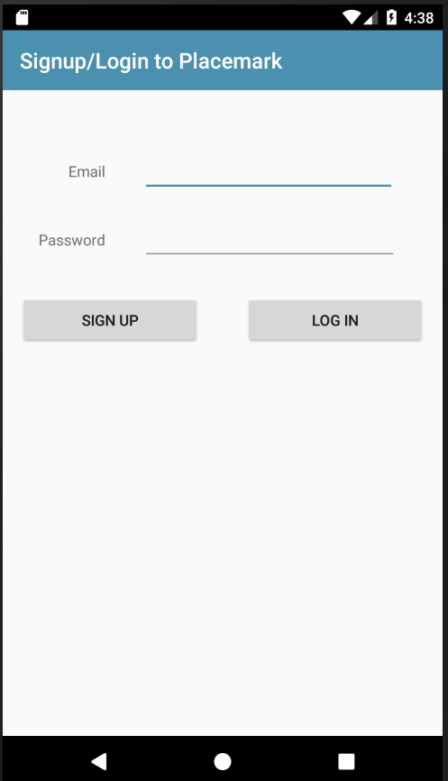
We need these new string resources:
strings.xml
<string name="title_activity_login"> Signup/Login to Placemark</string>This is the login layout:
res/layout/activity_login.xml
<?xml version="1.0" encoding="utf-8"?>
<androidx.constraintlayout.widget.ConstraintLayout
xmlns:android="http://schemas.android.com/apk/res/android"
xmlns:app="http://schemas.android.com/apk/res-auto"
xmlns:tools="http://schemas.android.com/tools"
android:layout_width="match_parent"
android:layout_height="match_parent"
tools:context="org.wit.placemark.views.login.LoginView">
<com.google.android.material.appbar.AppBarLayout
android:id="@+id/appBarLayout"
android:layout_width="match_parent"
android:layout_height="wrap_content"
android:background="@color/colorAccent"
android:fitsSystemWindows="true"
app:elevation="0dip"
app:theme="@style/ThemeOverlay.AppCompat.Dark.ActionBar">
<androidx.appcompat.widget.Toolbar
android:id="@+id/toolbar"
android:layout_width="match_parent"
android:layout_height="wrap_content"
app:titleTextColor="@color/colorPrimary" />
</com.google.android.material.appbar.AppBarLayout>
<androidx.constraintlayout.widget.ConstraintLayout
android:layout_width="match_parent"
android:layout_height="match_parent"
android:layout_marginStart="8dp"
android:layout_marginEnd="8dp"
android:layout_marginBottom="16dp"
app:layout_constraintBottom_toBottomOf="parent"
app:layout_constraintEnd_toEndOf="parent"
app:layout_constraintHorizontal_bias="0.0"
app:layout_constraintStart_toStartOf="parent"
app:layout_constraintTop_toTopOf="parent"
app:layout_constraintVertical_bias="0.0">
<EditText
android:id="@+id/email"
android:layout_width="237dp"
android:layout_height="wrap_content"
android:layout_marginStart="8dp"
android:layout_marginTop="108dp"
android:layout_marginEnd="36dp"
android:ems="10"
android:inputType="textEmailAddress"
app:layout_constraintEnd_toEndOf="parent"
app:layout_constraintHorizontal_bias="1.0"
app:layout_constraintStart_toEndOf="@+id/textView"
app:layout_constraintTop_toTopOf="parent" />
<TextView
android:id="@+id/textView"
android:layout_width="72dp"
android:layout_height="23dp"
android:layout_marginStart="16dp"
android:text="Email"
android:textAlignment="textEnd"
app:layout_constraintBaseline_toBaselineOf="@+id/email"
app:layout_constraintStart_toStartOf="parent" />
<EditText
android:id="@+id/password"
android:layout_width="239dp"
android:layout_height="wrap_content"
android:layout_marginTop="8dp"
android:ems="10"
android:inputType="textPassword"
app:layout_constraintBottom_toBottomOf="parent"
app:layout_constraintEnd_toEndOf="@+id/email"
app:layout_constraintHorizontal_bias="0.0"
app:layout_constraintStart_toStartOf="@+id/email"
app:layout_constraintTop_toBottomOf="@+id/email"
app:layout_constraintVertical_bias="0.026" />
<TextView
android:id="@+id/textView2"
android:layout_width="70dp"
android:layout_height="29dp"
android:text="Password"
android:textAlignment="textEnd"
app:layout_constraintBaseline_toBaselineOf="@+id/password"
app:layout_constraintEnd_toEndOf="@+id/textView"
app:layout_constraintHorizontal_bias="1.0"
app:layout_constraintStart_toStartOf="@+id/textView" />
<Button
android:id="@+id/signUp"
android:layout_width="169dp"
android:layout_height="wrap_content"
android:layout_marginStart="8dp"
android:layout_marginTop="32dp"
android:text="Sign Up"
app:layout_constraintStart_toStartOf="parent"
app:layout_constraintTop_toBottomOf="@+id/textView2" />
<Button
android:id="@+id/logIn"
android:layout_width="169dp"
android:layout_height="wrap_content"
android:layout_marginStart="8dp"
android:layout_marginTop="8dp"
android:layout_marginEnd="8dp"
android:text="Log In"
app:layout_constraintBottom_toBottomOf="@+id/signUp"
app:layout_constraintEnd_toEndOf="parent"
app:layout_constraintHorizontal_bias="1.0"
app:layout_constraintStart_toEndOf="@+id/signUp"
app:layout_constraintTop_toBottomOf="@+id/password"
app:layout_constraintVertical_bias="1.0" />
</androidx.constraintlayout.widget.ConstraintLayout>
</androidx.constraintlayout.widget.ConstraintLayout>Login View/Presenter
Our first version will just let the user signup/login without paying any attention to what they enter as credentials.
LoginPresenter
package org.wit.placemark.views.login
import org.wit.placemark.views.BasePresenter
import org.wit.placemark.views.BaseView
import org.wit.placemark.views.VIEW
class LoginPresenter(view: BaseView) : BasePresenter(view) {
fun doLogin(email: String, password: String) {
view?.navigateTo(VIEW.LIST)
}
fun doSignUp(email: String, password: String) {
view?.navigateTo(VIEW.LIST)
}
}LoginView
package org.wit.placemark.views.login
import android.os.Bundle
import kotlinx.android.synthetic.main.activity_login.*
import org.jetbrains.anko.toast
import org.wit.placemark.R
import org.wit.placemark.views.BaseView
class LoginView : BaseView() {
lateinit var presenter: LoginPresenter
override fun onCreate(savedInstanceState: Bundle?) {
super.onCreate(savedInstanceState)
setContentView(R.layout.activity_login)
init(toolbar, false)
presenter = initPresenter(LoginPresenter(this)) as LoginPresenter
signUp.setOnClickListener {
val email = email.text.toString()
val password = password.text.toString()
if (email == "" || password == "") {
toast("Please provide email + password")
}
else {
presenter.doSignUp(email,password)
}
}
logIn.setOnClickListener {
val email = email.text.toString()
val password = password.text.toString()
if (email == "" || password == "") {
toast("Please provide email + password")
}
else {
presenter.doLogin(email,password)
}
}
}
}In the above, note that we just start the PlacemarkListView, regardless of which button is pressed - or what is entered.
The manifest needs to be altered to now nominate this LoginView as the launch activity:
<?xml version="1.0" encoding="utf-8"?>
<manifest xmlns:android="http://schemas.android.com/apk/res/android"
package="org.wit.placemark">
<uses-permission android:name="android.permission.ACCESS_FINE_LOCATION" />
<application
android:name=".main.MainApp"
android:allowBackup="true"
android:icon="@mipmap/ic_launcher"
android:label="@string/app_name"
android:roundIcon="@mipmap/ic_launcher_round"
android:supportsRtl="true"
android:theme="@style/AppTheme">
<activity android:name=".views.login.LoginView"
android:label="@string/title_activity_login"
android:launchMode="singleTop">
<intent-filter>
<action android:name="android.intent.action.VIEW" />
<action android:name="android.intent.action.MAIN" />
<category android:name="android.intent.category.LAUNCHER" />
</intent-filter>
</activity>
<activity android:name=".views.placemarklist.PlacemarkListView"
android:label="@string/title_activity_placemark_list"
android:launchMode="singleTop">
</activity>
<activity android:name=".views.placemark.PlacemarkView"
android:label="@string/title_activity_placemark">
<meta-data
android:name="android.support.PARENT_ACTIVITY"
android:value=".views.placemarklist.PlacemarkListView" />
</activity>
<activity
android:name=".views.editlocation.EditLocationView"
android:label="@string/title_activity_edit_location">
<meta-data
android:name="android.support.PARENT_ACTIVITY"
android:value=".views.placemark.PlacemarkView" />
</activity>
<activity
android:name=".views.map.PlacemarkMapView"
android:label="@string/title_activity_placemark_maps"
android:launchMode="singleTop">
<meta-data
android:name="android.support.PARENT_ACTIVITY"
android:value=".views.placemarklist.PlacemarkListView" />
</activity>
<meta-data
android:name="com.google.android.geo.API_KEY"
android:value="@string/google_maps_key" />
</application>
</manifest>Run the app now - it should display the login activity first, and take you to the placemark list when you press either button.
Logout
As we now support log in - we also need to support logout. This will require a change to our existing menus in PlacemarkListView. Once logged in the AppBar will be reconfigured to have a drop down menu:
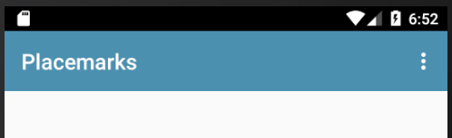
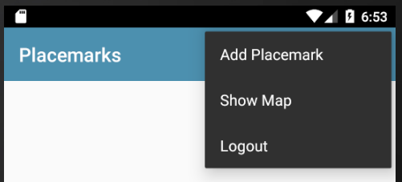
First, some new/revised strings:
res/values/strings.xml
<string name="menu_showMap">Show Map</string>
<string name="menu_logout">Logout</string>This is the revised menu
memu_main.xml
<?xml version="1.0" encoding="utf-8"?>
<menu xmlns:android="http://schemas.android.com/apk/res/android"
xmlns:app="http://schemas.android.com/apk/res-auto">
<item
android:id="@+id/item_add"
android:icon="@android:drawable/ic_menu_add"
android:title="@string/menu_addPlacemark"
app:showAsAction="never"/>
<item
android:id="@+id/item_map"
android:icon="@android:drawable/ic_menu_mapmode"
android:title="@string/menu_showMap"
app:showAsAction="never"/>
<item
android:id="@+id/item_logout"
android:title="@string/menu_logout"
android:visible="true"
app:showAsAction="never" />
</menu>In order to Launch a view, we have been encapsulating the start procedure in BaseView:
BaseView
...
import org.wit.placemark.views.login.LoginView
...
enum class VIEW {
LOCATION, PLACEMARK, MAPS, LIST, LOGIN
}
...
fun navigateTo(view: VIEW, code: Int = 0, key: String = "", value: Parcelable? = null) {
var intent = Intent(this, PlacemarkListView::class.java)
when (view) {
VIEW.LOCATION -> intent = Intent(this, EditLocationView::class.java)
VIEW.PLACEMARK -> intent = Intent(this, PlacemarkView::class.java)
VIEW.MAPS -> intent = Intent(this, PlacemarkMapView::class.java)
VIEW.LIST -> intent = Intent(this, PlacemarkListView::class.java)
VIEW.LOGIN -> intent = Intent(this, LoginView::class.java)
}
if (key != "") {
intent.putExtra(key, value)
}
startActivityForResult(intent, code)
}We need to be able to handle the new logout menu option. This is an extend version of the menu handler in PlacemarkListView:
PlacemarkListView
override fun onOptionsItemSelected(item: MenuItem?): Boolean {
when (item?.itemId) {
R.id.item_add -> presenter.doAddPlacemark()
R.id.item_map -> presenter.doShowPlacemarksMap()
R.id.item_logout ->presenter.doLogout()
}
return super.onOptionsItemSelected(item)
}Finally, this will need a new method in PlacemarkListPresenter:
PlacemarkListPresenter
fun doLogout() {
view?.navigateTo(VIEW.LOGIN)
}
}Notice we are just switching to the login screen when logout is selected.
Try this now, and make sure login and logout work as expected.
Firebase
Visit Firebase and create / log in to your account:
Create a new Firebase Project:
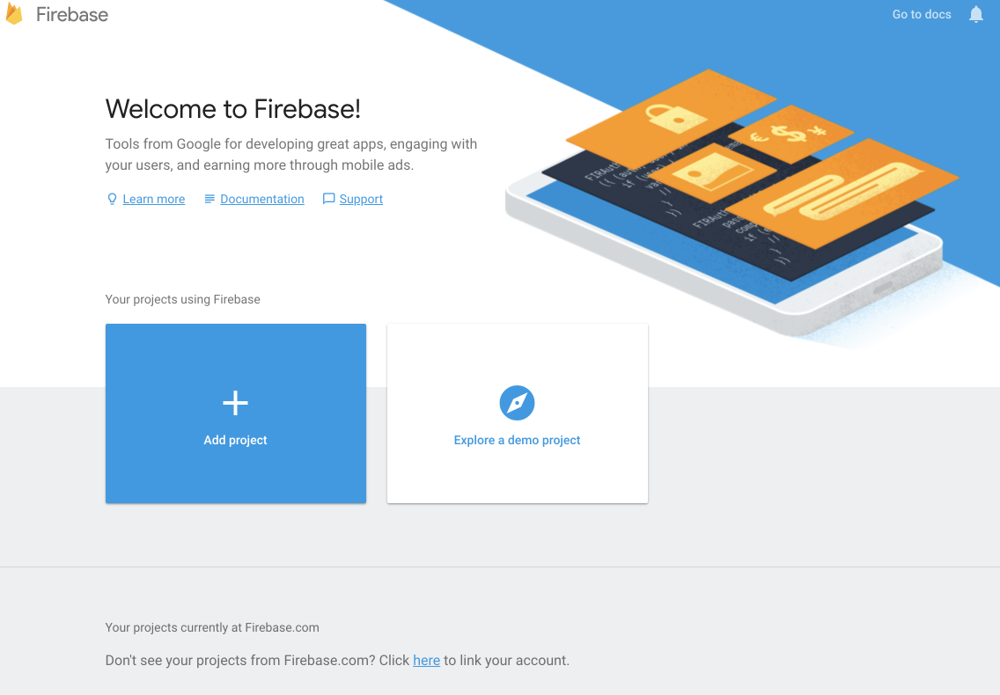
Give the project a name:
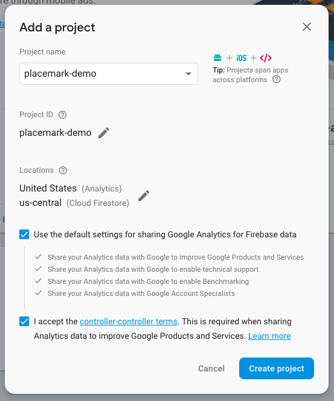
Once the app is created - you should see the application console (click on Develop to see drop down menu):
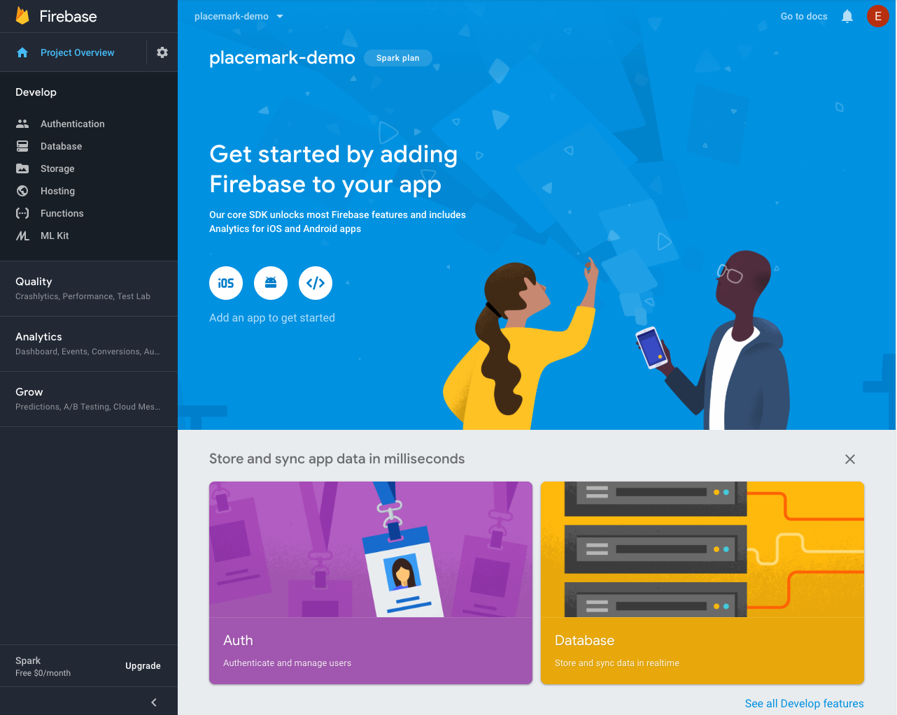
Select the Authentication panel -
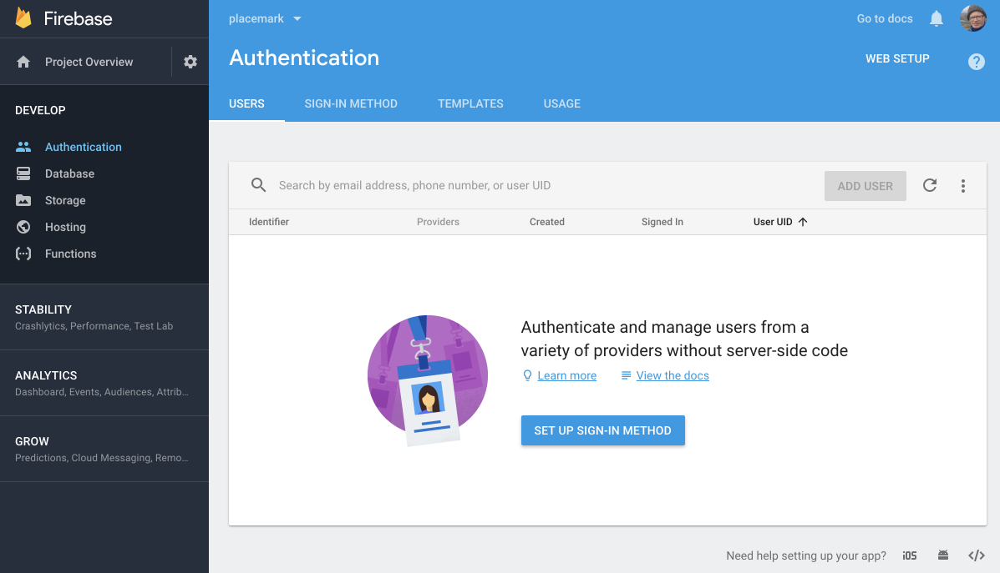
Press Set Sign-in Method and in the next screen and enable Email/Password:
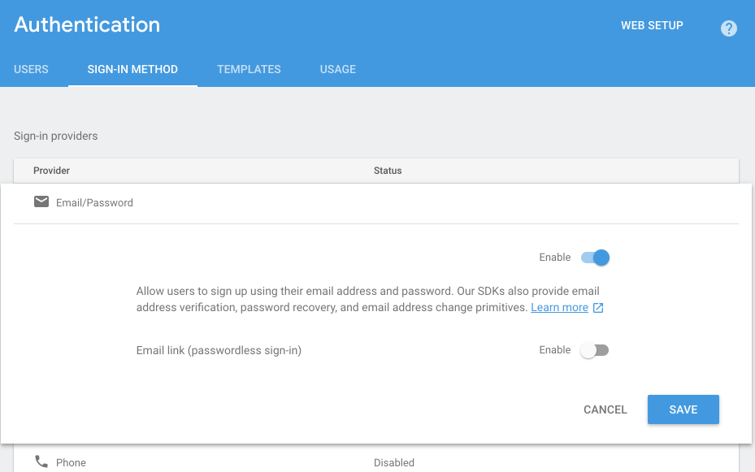
Your Authentication methods should look like this:
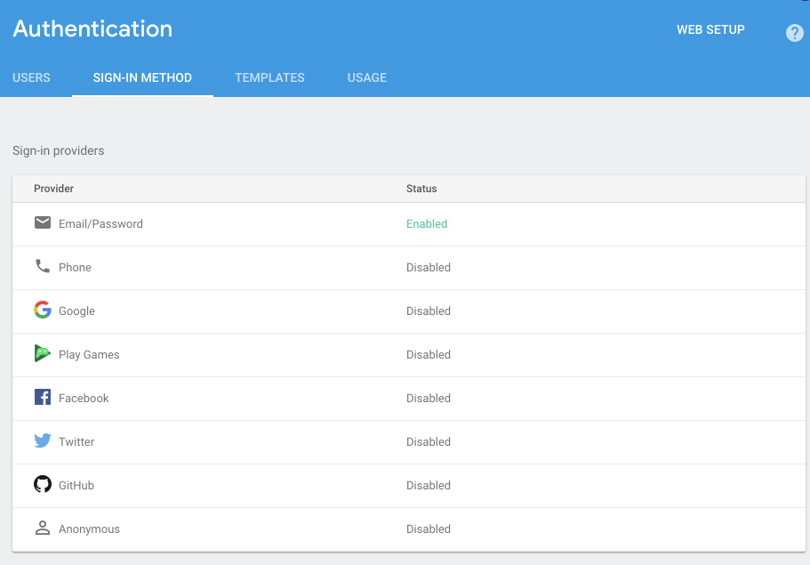
Connect the App
Back in Android Studio, select Tools->Firebase - you should see the Firebase Assistant:
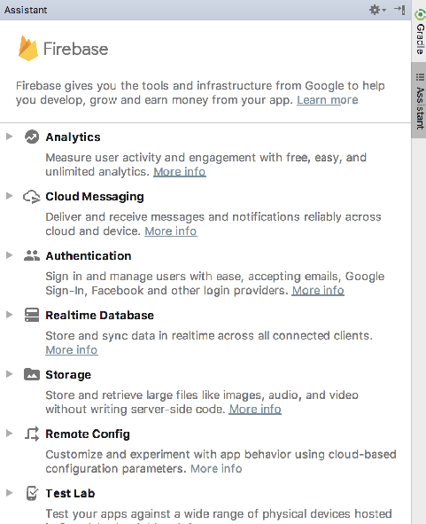
Select Authentication:
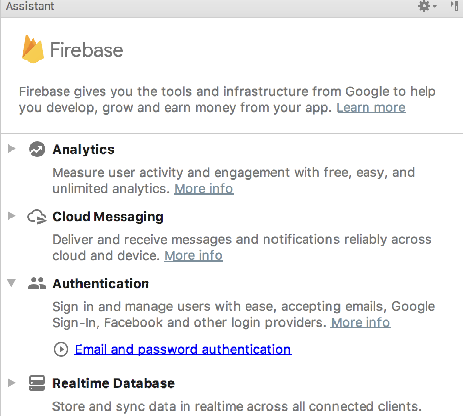
... and then select Email and password authentication:
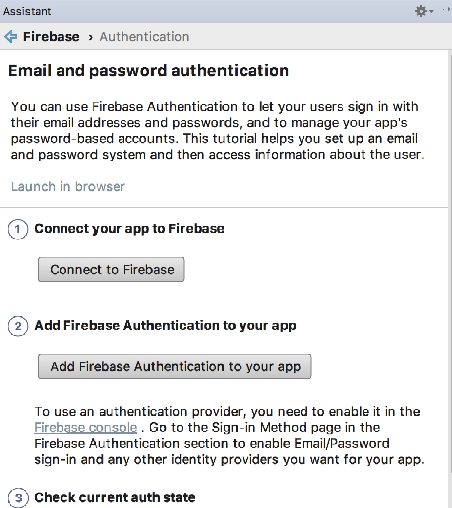
Now press Connect to Firebase
This may require you to authenticate to firebase with your account. Once connected, you should see your firebase created app:
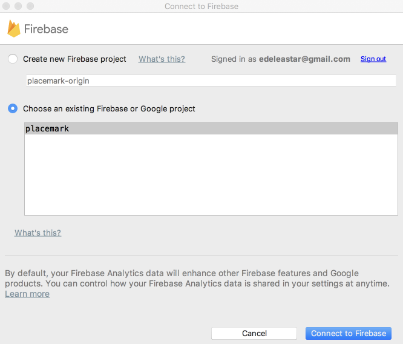
Select the app and press Connect to Firebase
This will insert a new file into your project called google-services.json. This file is embedded in the app folder. You will need to switch to the Project perspective in Studio in order to see it.
The assistant will also insert additional entries into both of our gradle files. The top level gradle will have this additional entry:
build.gradle
classpath 'com.google.gms:google-services:4.0.1'The app gradle file will have additional libraries. As we are managing our gradle a little differently - we will take control of this ourselves.
This is a revised version of the base gradle file you should use:
project gradle
apply plugin: 'com.android.application'
apply plugin: 'kotlin-android'
apply plugin: 'kotlin-android-extensions'
apply plugin: "kotlin-kapt"
apply plugin: 'com.google.gms.google-services'
androidExtensions {
experimental = true
}
android {
compileSdkVersion 28
defaultConfig {
applicationId "org.wit.placemark"
minSdkVersion 23
targetSdkVersion 28
versionCode 1
versionName "1.0"
testInstrumentationRunner "androidx.test.runner.AndroidJUnitRunner"
}
buildTypes {
release {
minifyEnabled false
proguardFiles getDefaultProguardFile('proguard-android.txt'), 'proguard-rules.pro'
}
}
}
ext {
app_compat_version = '1.0.2'
constraint_layout_version = '2.0.0-alpha2'
material_version = '1.0.0'
cardview_version = '1.0.0'
design_library_version = '26.1.0'
support_library_version = '26.1.0'
play_services_maps_version = '16.0.0'
play_services_location_version = '16.0.0'
anko_version = '0.10.7'
anko_commons_version = '0.10.7'
gson_version = '2.8.5'
room_version = "2.0.0"
firebase_version = '16.0.5'
}
dependencies {
implementation fileTree(dir: 'libs', include: ['*.jar'])
implementation "org.jetbrains.kotlin:kotlin-stdlib-jdk7:$kotlin_version"
implementation "androidx.appcompat:appcompat:$app_compat_version"
implementation "androidx.constraintlayout:constraintlayout:$constraint_layout_version"
implementation "com.google.android.material:material:$material_version"
implementation "androidx.cardview:cardview:$cardview_version"
implementation "com.google.android.gms:play-services-maps:$play_services_maps_version"
implementation "com.google.android.gms:play-services-location:$play_services_location_version"
implementation "org.jetbrains.anko:anko-commons:$anko_commons_version"
implementation "org.jetbrains.anko:anko:$anko_version"
implementation "com.google.code.gson:gson:$gson_version"
implementation "androidx.room:room-runtime:$room_version"
kapt "androidx.room:room-compiler:$room_version"
implementation "com.google.firebase:firebase-auth:$firebase_version"
implementation "com.google.firebase:firebase-database:$firebase_version"
testImplementation 'junit:junit:4.12'
androidTestImplementation 'androidx.test:runner:1.1.0'
androidTestImplementation 'androidx.test.espresso:espresso-core:3.1.0'
}These are the new features in the project:
...
apply plugin: 'com.google.gms.google-services'
...
firebase_version = '16.0.5'
...
implementation "com.google.firebase:firebase-auth:$firebase_version"
implementation "com.google.firebase:firebase-database:$firebase_version"
...Rebuild the application now to make sure all of these libraries can be incorporated correctly.
google-service.json
The Firebase wizard will also have generate a file of various credentials for your app in
- app/app/google-services.json
Have a look at the contents of this file now. It contains multiple keys to facilitate authentication to your firebase app. You will need to exclude this from git, particularly if the repo is public:
.gitignore
app/google-services.jsonProgress
When login in, we should display some indication to the user that we are 'working' on the login. This is usually via a Progress widget of some kind. Bring one in now to the login layout:
It might be structured like this in the layout:
activity_login.xml
...
<ProgressBar
android:id="@+id/progressBar"
style="@style/Widget.AppCompat.ProgressBar"
android:layout_width="196dp"
android:layout_height="96dp"
android:layout_marginStart="8dp"
android:layout_marginTop="8dp"
android:layout_marginEnd="8dp"
android:layout_marginBottom="8dp"
app:layout_constraintBottom_toBottomOf="parent"
app:layout_constraintEnd_toEndOf="parent"
app:layout_constraintStart_toStartOf="parent"
app:layout_constraintTop_toBottomOf="@+id/signUp" />
...In LoginView we can then toggle this widget.
First, in onCreate we can make it invisible (or GONE)
progressBar.visibility = View.GONEThen we can override the methods already defined in the BaseView class:
LoginView
override fun showProgress() {
progressBar.visibility = View.VISIBLE
}
override fun hideProgress() {
progressBar.visibility = View.GONE
}
}Signup/Login Implementation
Back in the LoginPresenter class - we can implement the Firebase login strategy:
LoginPresenter
package org.wit.placemark.views.login
import com.google.firebase.auth.FirebaseAuth
import org.jetbrains.anko.toast
import org.wit.placemark.views.BasePresenter
import org.wit.placemark.views.BaseView
import org.wit.placemark.views.VIEW
class LoginPresenter(view: BaseView) : BasePresenter(view) {
var auth: FirebaseAuth = FirebaseAuth.getInstance()
fun doLogin(email: String, password: String) {
view?.showProgress()
auth.signInWithEmailAndPassword(email, password).addOnCompleteListener(view!!) { task ->
if (task.isSuccessful) {
view?.navigateTo(VIEW.LIST)
} else {
view?.toast("Sign Up Failed: ${task.exception?.message}")
}
view?.hideProgress()
}
}
fun doSignUp(email: String, password: String) {
view?.showProgress()
auth.createUserWithEmailAndPassword(email, password).addOnCompleteListener(view!!) { task ->
if (task.isSuccessful) {
view?.navigateTo(VIEW.LIST)
} else {
view?.toast("Sign Up Failed: ${task.exception?.message}")
}
view?.hideProgress()
}
}
}This will sign up a new user with the Firebase service. Try it now
Make sure to enter a correctly formed email + a password of at least 8 characters.
The application should take you to the main Placemarks screen.
Back in the Firebase console - check the authentication panel to see if the new user is recorded:
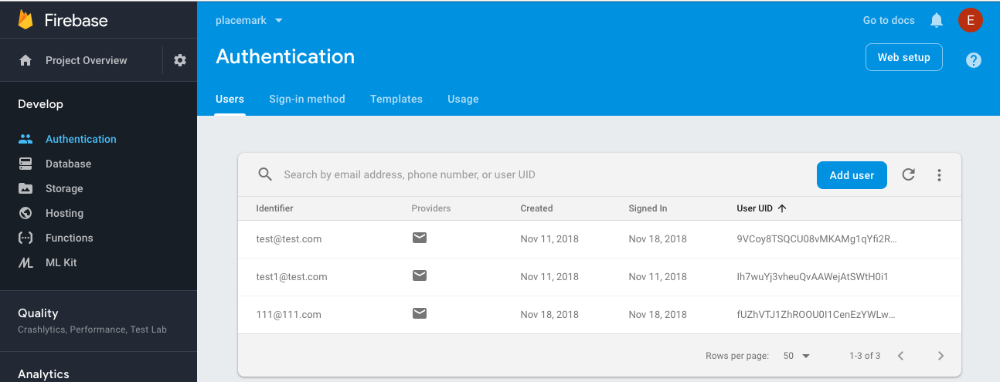
Solution
Placemark application so far:
Exercise 1
Implement logout. This is the FirebaseAuth method we need:
Exercise 2
Adjust the title of the PlacemarkListActivity - such that it displays the logged in users email:
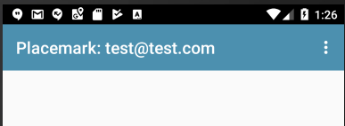
The logged in user details are reasonably easy to locate:
Here is how we could access this in kotlin:
val user = FirebaseAuth.getInstance().currentUser